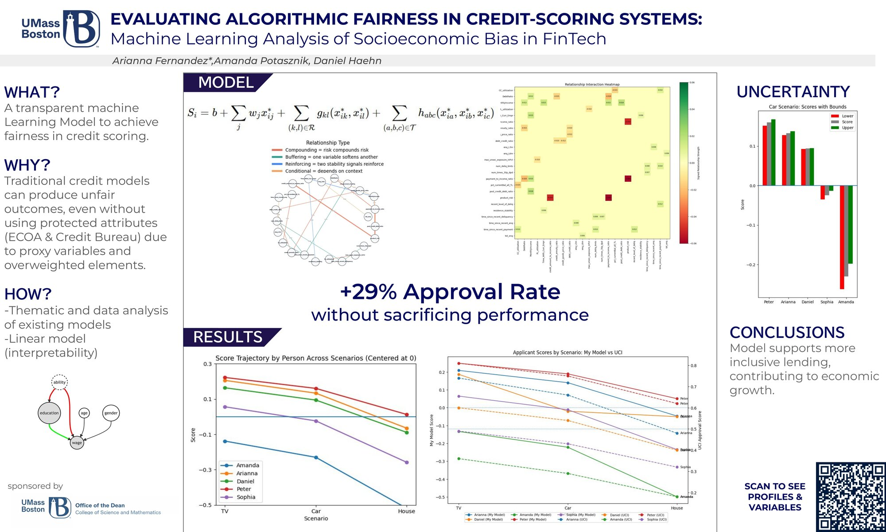

Fair Credit,
Better Outcomes
Designed an interpretable credit-approval model to identify socioeconomic proxy bias and evaluate demographic parity, equal opportunity, and disparate impact.
+29% approval rate without sacrificing predictive performancePythonScikit-learnPandasInterpretable MLFairness Metrics
Open full project ↗